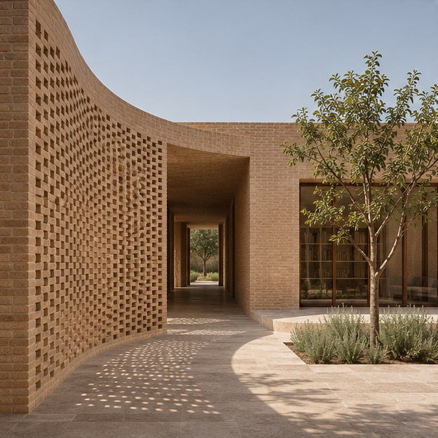

معماری مسکونی
ویلای خطِ افق
دو حجم کشیده روی شیب مینشینند و منظره را از اتاق نشیمن تا تراس قاب میگیرند.
به نور، مصالح و شیوهٔ استفاده از فضا نگاه میکنم تا هر طرح از نیازهای واقعی همان مکان شکل بگیرد.


این مجموعه به طراحی خانهها، فضاهای داخلی و بازآفرینی بناها میپردازد.
نور طبیعی، بافت مصالح و نحوهٔ استفاده از فضا در شکلگیری هر طرح نقش دارند.
از پروژهات بگو
از طراحی یک خانه تا بازآفرینی یک بنای قدیمی.
معماری مسکونی
دو حجم کشیده روی شیب مینشینند و منظره را از اتاق نشیمن تا تراس قاب میگیرند.

معماری مسکونی
رواقی سنگی میان اتاقها و حیاط مینشیند و سایهاش در طول روز به اطراف درخت زیتون میرسد.

طراحی داخلی مسکونی
کمدها و قفسهها در یک دیوار چوبی جمع میشوند تا جای نشستن کنار پنجره آزاد بماند.

طراحی داخلی تجاری
پیشخوان سفالی مسیر سفارش را مشخص میکند و میزهای کنار پنجره برای مکث و گفتوگو جا باز میکنند.

بازآفرینی خانهٔ قدیمی
طاقهای آجری حفظ میشوند و یک فضای نشیمن تازه کنار حوض باریک به حیاط اضافه میشود.

بازآفرینی فضای فرهنگی
دیوارهای روشن برای نمایش آثار زیر طاق آجری قرار میگیرند و بازشوی سقف مسیر حرکت را روشن میکند.
از فضایی که دارید و تغییری که برایش در نظر گرفتهاید بگویید.